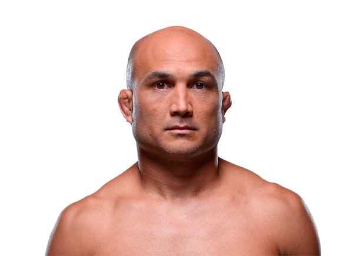

BJ Penn es un destacado peleador estadounidense de MMA, conocido por su increíble habilidad en jiu-jitsu brasileño y por ser campeón en dos divisiones de UFC. Nació el 13 de diciembre de 1978 en Kailua, Hawái. Penn ha sido pionero en popularizar el jiu-jitsu en el MMA moderno.

Otros que podrían interesarte: